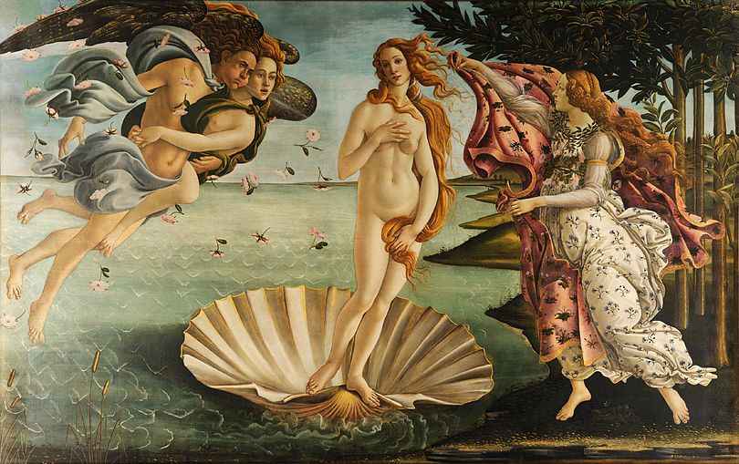

Welcome to our painting gallery!

reference = The Birth Of Venus
reference = Władysław Teodor Benda (1873-1948)
Painting is a form of visual art that involves applying pigment to a surface, such as canvas, paper, or walls, to create an image or expression. It has been a fundamental means of artistic expression for centuries, allowing artists to convey emotions, ideas, and stories through color, composition, and technique. From the vibrant works of the Renaissance to the abstract styles of modern art.